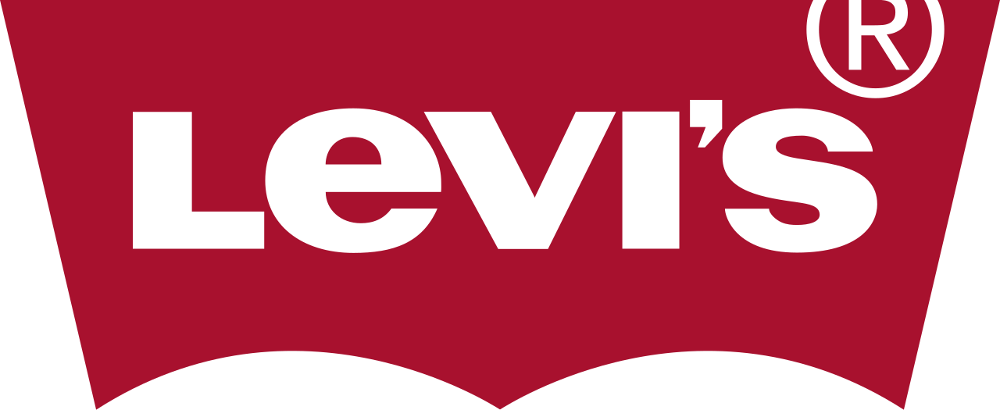

홈 > 브랜드 매거진 > 누디진
누디진
누디진(Nudie Jeans)은 raw 데님과 무상 수선·재활용을 핵심으로 하는 스웨덴의 친환경 청바지 브랜드이다.
산업 분야 패션·럭셔리 · 공개 등급 편집 검수 · 브랜드 평가 4.7 ★

NJ
누디진
한눈에 보는 브랜드
누디진(Nudie Jeans)은 2001년 스웨덴 예테보리에서 마리아 에릭손(Maria Erixon)이 세운 데님 브랜드다. 세탁과 가공을 최소화한 드라이(생) 데님을 중심에 두고, 입는 사람의 몸과 시간에 맞춰 색이 바래고 길드는 청바지를 지향한다.
모든 면제품에 100% 유기농 코튼을 쓰고, 구입한 청바지를 평생 무료로 고쳐 주는 수선 정책으로 알려져 있다. 전 세계 직영 리페어샵을 통해 수선·재판매·재활용을 연결하며, 2024년 매출은 약 5억 1,100만 스웨덴 크로나(한화 약 700억 원 규모)로 집계됐다.
브랜드 관점
누디진의 위치는 대량 생산 중심의 리바이스, 그리고 미니멀한 로(raw) 데님 미학으로 알려진 프랑스 A.P.C.와 비교하면 또렷해진다. 리바이스가 물 절감 같은 대규모 공정 개선에 집중하고 A.P.C.가 디자인 절제와 페이드 문화를 내세운다면, 누디진은 100% 유기농 코튼 원단과 평생 무료 수선을 한 몸으로 묶은 '오래 입히는' 전략을 택했다.
핵심은 한 벌의 수명을 늘려 신규 생산 자체를 줄이는 순환 구조이며, 코튼 재배 농가부터 염색 공장 인력 수까지 공개하는 연차 지속가능성 보고서가 이를 뒷받침한다. 한국 시장에서도 '구매 후 끝없이 수선해 입는다'는 메시지는 무신사 세대의 빈티지·아카이브 소비, 그리고 ESG·투명성 요구가 맞물리는 지점과 잘 닿아, 가격대가 높아도 가치 소비층을 설득할 여지가 크다.
시작과 성장
창업자 마리아 에릭손은 데님 브랜드 리(Lee)에서 디자이너로 경력을 쌓으며 청바지 산업을 익혔고, 기성 데님이 가공으로 만든 인위적 빈티지에 의문을 품었다. 그는 입을수록 자기만의 흔적이 새겨지는 옷을 만들겠다는 생각으로 2001년 예테보리에서 당시 파트너였던 요아킴 레빈과 함께 누디진을 시작했다.
출발점은 추가 워싱 없이 입어서 길들이는 드라이 데님 철학으로, '데님은 시간에 따라 변하는 살아 있는 천'이라는 관점을 브랜드 정체성으로 굳혔다. 이후 청바지를 버리지 않고 고쳐 입게 하자는 발상이 무료 수선 서비스와 직영 리페어샵으로 구체화됐고, 2010년대에는 모든 면제품을 유기농 코튼으로 전환했다.
자국을 넘어 유럽·미국·아시아로 매장과 리페어 거점을 넓히며 지속가능 데님의 대표 사례로 자리 잡았다.
브랜드 아이덴티티
브랜드의 중심 가치는 지속가능성과 투명성, 그리고 오래 쓰는 소비다. 화려한 가공 대신 원단 본연과 시간이 만드는 페이드를 미감으로 삼으며, 단순하고 정직한 워드마크 로고가 이 태도를 그대로 드러낸다.
타깃은 환경·노동 이슈에 민감하고 한 벌을 길게 입는 데 가치를 두는 데님 애호가와 가치 소비층으로, 성별과 나이를 가르지 않는 보편적 접근을 지향한다. 보이스는 과장 없이 사실과 과정을 담담하게 설명하는 톤으로, 코튼 재배부터 수선까지의 여정을 솔직하게 공개하며 신뢰를 쌓는 방식을 택한다.
제품과 서비스
주력은 추가 가공이 없는 드라이 데님과 유기농 코튼 청바지이며, 신축성 있는 스트레치부터 리지드 셀비지까지 폭넓게 갖춘다. 핏 라인업은 슬림 스트레이트인 그림 팀(Grim Tim), 베스트셀러로 꼽히는 슬림 핏 린 딘(Lean Dean) 등 이름을 붙인 다양한 실루엣으로 구성된다.
가격대는 스타일과 원단에 따라 한화 약 30만~50만 원대를 형성한다. 유통은 직영 매장과 함께, 구입 청바지를 평생 무료로 수선해 주는 리페어샵을 핵심 채널로 운영하는 점이 특징이다.
현재 상태
본사는 스웨덴 예테보리에 있으며, 소유 구조의 세부 지분 내역은 미공개다. 2024년 말 기준 20개 도시에 33곳의 직영 리페어샵을 두고, 14개 도시에 15곳의 수선 파트너를 함께 운영했다.
같은 해 수선한 청바지는 6만 8,342벌로 전년의 7만 3,368벌에서 다소 줄었다. 2024년 매출은 약 5억 1,100만 스웨덴 크로나로 전년 대비 6% 늘었고, 이커머스와 직영 매장 등 자사 채널이 전체 순매출의 약 66%를 차지했다.
타임라인
BI/CI 변천사
대표 로고대표 브랜드 마크함께 읽을 브랜드

패션·럭셔리 · 편집 검수리바이스리바이스는 청바지를 작업복에서 세대와 태도를 드러내는 문화적 유니폼으로 바꾼 브랜드다. 튼튼한 바지는 시간이 지나며 자유, 젊음, 반항, 일상성을 담는 상징으로 확장...
 패션·럭셔리 · 편집 검수샤넬
패션·럭셔리 · 편집 검수샤넬샤넬은 패션을 장식이 아니라 태도와 해방의 언어로 바꾼 브랜드다. 브랜드의 힘은 제품의 고급스러움뿐 아니라 여성의 몸과 생활 방식을 새롭게 해석한 상징성에서 나온다.
Au
Aurlands
패션·럭셔리 · 편집 검수AurlandsAurlands는 2019년에 기록된 Fashion 계열의 브랜드 아이덴티티 사례입니다. Heydays가 아이덴티티 작업의 디자이너로 기록되어 있습니다. 공개 섹션...
 패션·럭셔리 · 매거진 완성스와치
패션·럭셔리 · 매거진 완성스와치스와치는 시계를 고가의 정밀기기에서 매일 바꿔 착용할 수 있는 패션 언어로 전환했다. 시간을 알려주는 기능보다 색, 그래픽, 컬렉션, 가벼운 가격대가 브랜드 경험의...
 패션·럭셔리 · 매거진 완성코치
패션·럭셔리 · 매거진 완성코치코치는 실용적 가죽 제품을 일상적 럭셔리의 영역으로 끌어올린 브랜드다. 과시적 명품보다 접근 가능한 품질과 라이프스타일 이미지를 통해 오래 쓰는 가방의 감각을 브랜드...
 패션·럭셔리 · 매거진 완성루이비통
패션·럭셔리 · 매거진 완성루이비통루이비통은 여행가방에서 출발했지만, 이동의 기능을 럭셔리한 삶의 상징으로 확장했다. 브랜드의 헤리티지는 물건을 담는 도구가 아니라 이동하는 사람의 취향과 지위를 표현...
 패션·럭셔리 · 매거진 완성티파니
패션·럭셔리 · 매거진 완성티파니티파니는 주얼리 자체만큼이나 색과 포장, 선물의 의식을 브랜드 자산으로 만든다. 블루 박스와 매장 경험은 제품을 구매하는 순간을 특별한 사건으로 바꾸며, 브랜드의 상...
 패션·럭셔리 · 편집 검수디젤
패션·럭셔리 · 편집 검수디젤디젤(Diesel)은 1978년 렌조 로소가 이탈리아 브레간체에서 설립한 데님 중심의 컨템포러리 패션 브랜드다. 도발적이고 실험적인 디자인으로 데님 헤리티지를 재해석...